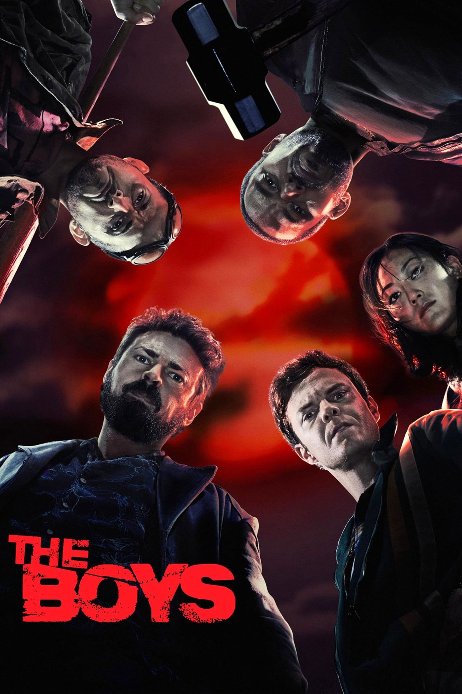
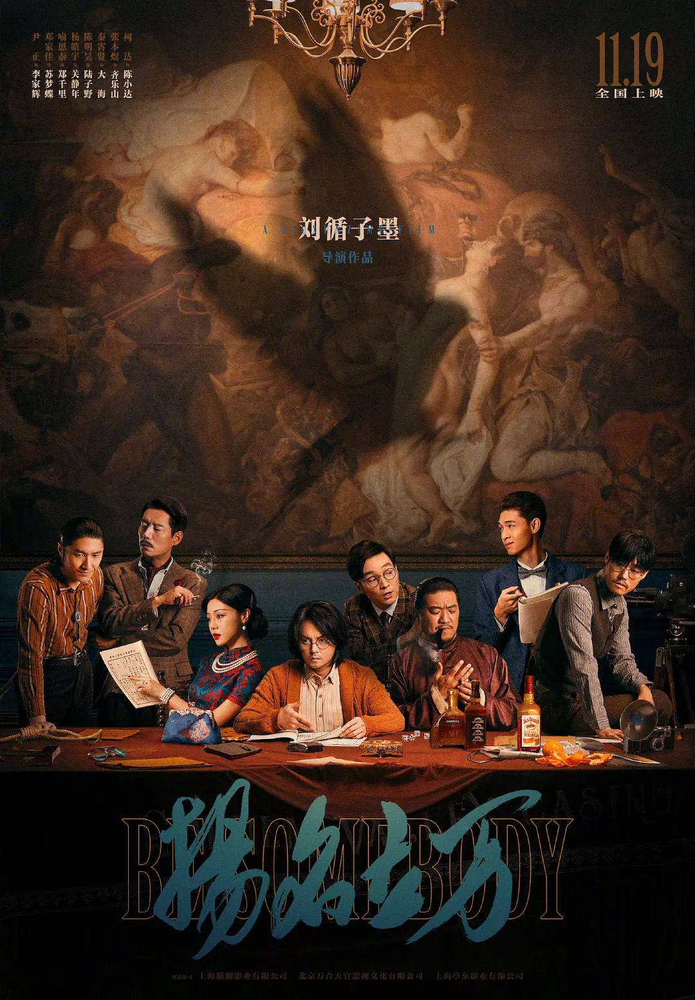

-
黑袍纠察队 第三季
The Boys Season 3
要不是群友推荐还说第三季比前两季加在一起都好看，我是不会在看了那个傻逼老婆之后继续看的，第三季果然跟我想的差不多，就还是屎。那角色一个个都跟疯了一样，没有哪一条线是经得起推敲的，人物的情感刻画除了土就是土，找不出别的形容，五百年前日漫玩剩下那一套矫情东西用在这显得更无脑了，越极力描写角色的悲惨背景或者强调心理活动越显得这个角色的情感单薄，像个假人，尤其是祖国人。但是现在已经看了三季有种上了大b贼船下不去的感觉，草章鱼和白丝小裤衩还是可以看的，主线真的算了。
2022-07-14 -
黑袍纠察队 第二季
The Boys Season 2
打了一堆不小心给关了，懒得重写了，简明扼要，第二季是屎，布彻尔老婆是个脑子让祖国人奸烂了的彻头彻尾的大傻逼，纯纯婊。福利院还是精神病院查了一半没下文了，超能力人的能力也都变得不明不白多了一堆奇妙设定，屑。
2022-07-09 -

黑袍纠察队 第一季
The Boys Season 1
第一季是稳定的、且横冲直撞的好看。颠覆超级英雄的设定，布彻尔和弗兰奇、母乳，还有其他高级别大佬的神秘感，还是让人很有追下去的欲望的。主线设置是很完美的小人物推翻大世界，下克上剧本，节奏点有部分都合但多数合理，男主是能够代表大部分普通人的，观众也几乎不会有跳脱故事的不真实感。从杀掉透明人开始主角团的慌乱，内部的矛盾，超级英雄的阴暗面逐个冒头，故事可以说非常引人入胜了。
2022-07-06 -
白夜追凶
Day and Night
结局什么jb玩意 我还寻思你这最后几集得多紧凑啊倒数第三集才暴露 合着压根就没拍完//该说不说前面超绝好看比那个无证之罪强太多了 铺垫伏笔都好 又合理又有趣 印象很深格外拉的是卧底那段两个女演员 属于是我上我比她强的水平 演技实在是太烂了 除此之外就是结尾长春小副本 实在影响观感 长春那块废话少点没准能多拍一段 哦对了这是昨天看完的【其实更新github.io的时候已经一个多月过去了。。本来想再多写一点但是实在想不起来了 这些都是之前随手写的拿来贴了 因为本来准备弄aws和数据库来着 结果完全没时间弄 这io再用一阵子吧】
2022-06-04 -
绿色星球
The Green Planet
哔站618搞活动的时候大会员首页好像会被狂推会员免费节目，这个就是被推的之一，本来就是本着随便看看的心态去的，之前听说过地球脉动很好看这个封面看着也不捞，结果直接就陷进去了，再加上哔站弹幕是真的尼码好笑，红木和切叶蚁喂真菌那段，弹幕：切叶蚁“树叶来咯”，还有说轻木balsa是暖瓶塞子，说fire lily是澳大利亚纵火犯，看得我一边哭一边笑。有一个快要灭绝全球只剩下六七十株还是多少个的花，靠一种小鸟来传粉，结果那个鸟不来了，那个花儿也不行了，一个老人就每年去给这些花人工传粉，还播放那种小鸟的叫声，试图帮助那些鸟和仅存的这些花重新建立联系，不然他以后死了就没人帮这些花传粉了，那段真给我哭麻了。总之就是无可挑剔，没有想到看个纪录片会对植物如此共情，心疼非洲面包树保姆树，讨厌把别人拉下水的王莲，喜欢帅气的fire lily和森林里大树无私的互相给予，每一个镜头都很美，每一集主题也都扣的很到位，甚至连花絮都很有意思，是神仙纪录片，看完很多天了我也还是对很多镜头印象深刻。
2022-06-25 -
无证之罪
Burning Ice
这郭羽后劲儿太大了 我刚开始只以为这个人是单纯的蠢 智商不行 最多加点色批 没想到是纯纯的坏 搁这恶心人 比那李丰田可恨多了//我觉得剧本多少是被拍摄水平掣肘了 上帝视角想要拍出警方的无力感和当局者迷的代入感确实很难 但是目前的上帝视角实在是很多处让人觉得愚蠢到不合理了 不合理的地方就拿冲动/情感说事 这不是一个剧情片的剧本该干的事//另外那个林队那角色是真鸡巴恶心演的稀烂台词磕巴的剧情还搁那不合时宜的随地发情 去掉没有任何鸡毛的影响 养儿子男同事也完全可以发这个善心 换成普通队友哪怕直接让赵局兼任这个角色的位置也没有任何违和感 甚至最后那一枪换成经验老道的其他刑警队友 不受感情影响开准这一枪也更合理 整个剧里这个b除了前期对人颐指气使中期打官腔和替男主打马虎眼 也就是最后那一枪 全都是可有可无的存在 非常屑 有理由怀疑带资进组
2022-05-09 -

扬名立万
一部电影的诞生 / Be Somebody
牛逼疯了可以说 贼好看 万合天宜太强了😭😭😭 我最后脑子甚至都没够没想明白被分尸的那个是谁 夜莺真的让我有点失望 心安理得的承着齐乐山对她的好//剧中剧的设计好巧妙啊 有拳头有枕头都做到了！而且又有悬疑又有反转！！最后真的是女孩出来反转的！！唯独没看到彩蛋 害
2022-04-23 -
江湖论剑实录
挺好笑的 节奏很好 剧情结构简单合理 超出预期许多 张小公子太可爱啦 那个女扮男装的再好看点就好了 感情线很清爽很喜剧 羊驼和路人们都非常到位 工部的人不敢过自己修的桥🤪
2022-04-06